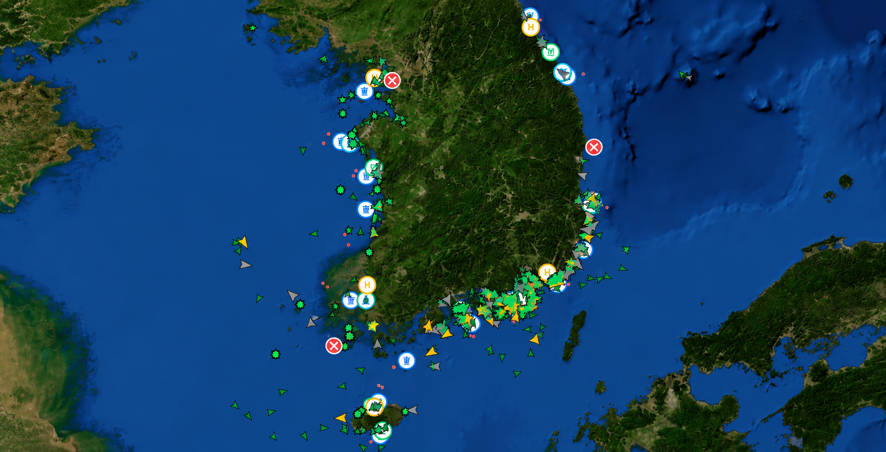

AI국내어선위험분석
29:54
어현상 (경위)
시스템 관리자 · ID/PW
통합상황판
소형어선 위치 · 위험도 · 이상징후 · 사고 대응 통합 모니터링
전체 어선
1,076척
실신호 1073
정상 운항
946척
(87.9%)
주의 단계
42척
(3.9%)
위험 단계
87척
(8.1%)
긴급(사고 의심)
1척
(0.1%)
통신 미응답 의심
85척
무응답 1
현재 해상상황 (전국 평균)
10.4m/s풍속
1.2m파고
20.0°C수온

지도종류
정상
주의
위험
긴급
신호 없음
최초 위험구역
NASA/USGS · NOAA ETOPO
근처 선박 · 함정 — 108BU CHANG
어선(20)
함정 · 구조자원
| 선박명 | 거리 | 상태 | 위험 |
|---|---|---|---|
| 2022 HAN IL HO | 7.3NM | 정지 | 정상 |
| 7MANBOG HO | 7.4NM | 조업 | 정상 |
| 505 DEOK UN HO | 7.4NM | 정지 | 정상 |
| 108 JIN YEONG HO | 7.4NM | 정지 | 정상 |
| 388MI RAE HO | 7.4NM | 정지 | 정상 |
| EOSEONGHO | 7.4NM | 정지 | 정상 |
위험도 추이
6시간12시간
24시간
긴급위험주의통신미응답정상
최근 경보 현황
| 시간 | 선박명 | 경보내용 | 위험도 |
|---|---|---|---|
| 11:56 | MMSI 440176740 | 위험 근접충돌 위험 | 12 |
| 11:56 | MMSI 440197670 | 위험 근접충돌 위험 | 49 |
| 11:56 | MMSI 440153080 | 위험 근접충돌 위험 | 64 |
| 11:56 | MMSI 440117470 | 위험 근접충돌 위험 | 12 |
| 11:56 | HAE JOON | 위험 근접충돌 위험 | 49 |
| 11:56 | MMSI 440089820 | 위험 근접충돌 위험 | 30 |
실종 · 표류 예측
(OpenDrift 호환 Leeway)
선박 표류
사람 표류(MOB)
108BU CHANG · 전복
50% 예측 범위
90% 예측 범위
예상 표류경로
사고 추정위치 (09:38)
예측 시간
+1h
+3h
+6h
+12h
+24h
+48h
예상 표류거리
2.9 NM
예상 표류방향
동 (81°)
예상 위치 시각
10.15 15:38
90% / 50% 범위
42.1 / 13.3km²